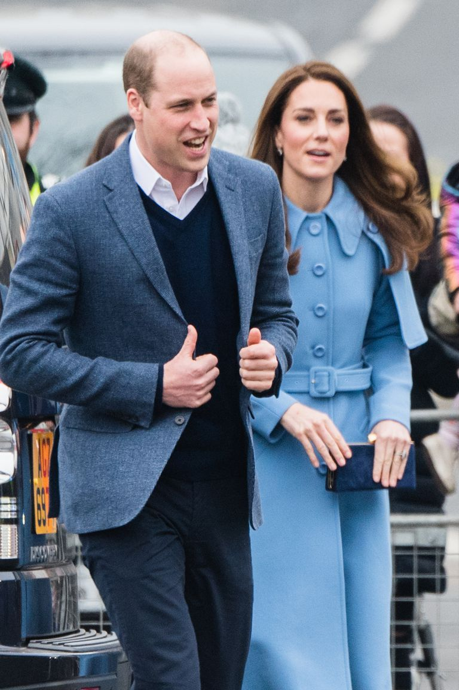
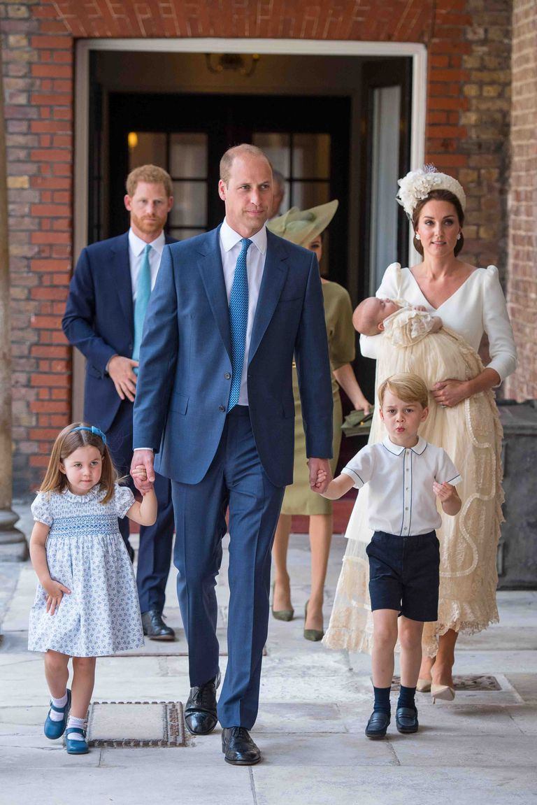

Kate Middleton joked about having her fourth child with Prince William today in Ballymena, Northern Ireland. She said she's feeling "broody" but her husband would be "worried" to have another kid.
William and Kate currently have three children: Prince George, Princess Charlotte, and Prince Louis, who was born last April.
Meanwhile, Prince Harry and Meghan Markle are expecting their first child this spring.
The Duke and Duchess of Cambridge are already proud parents of three royal kids—Prince George, 5, Princess Charlotte, 3, and Prince Louis, 10 months—but are they about to expand the family once again? Kate Middleton lightheartedly weighed in on the possibility of another baby during her trip to Northern Ireland with Prince William today.
People reports that during a walkabout in Ballymena, the duchess stopped to talk to a well-wisher named Alan Barr and his five-year-old son, James. "He’s gorgeous. It makes me feel broody," Kate said of the infant, according to Barr. ("Broody" means ready to have children, or contemplative and moody.)
When Barr asked if that means "baby number four" is a possibility, Kate responded with a laugh, "I think William would be a little worried," according to People.
Do you think William and Kate will have another baby?
This time last year, Kate was pregnant with her third child, Prince Louis. The fifth in line to the throne was born on April 23. Although she isn't expecting this year, the duchess (and the rest of the royals) do have a new family member to look forward to: Meghan Markle and Prince Harry's first child, who is due this spring.
The Duchess of Cambridge previously expressed her excitement for her in-laws to welcome a baby. "It's such a special time to have little kiddies," she told a fan in November. "And now a cousin for George, Charlotte and Louis as well! It'll be really special."